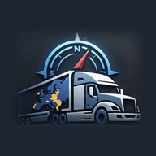
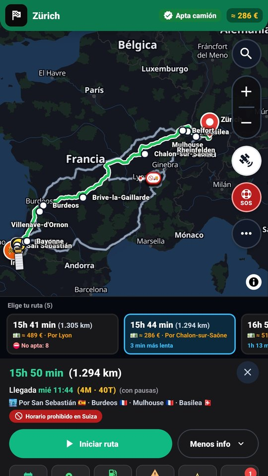
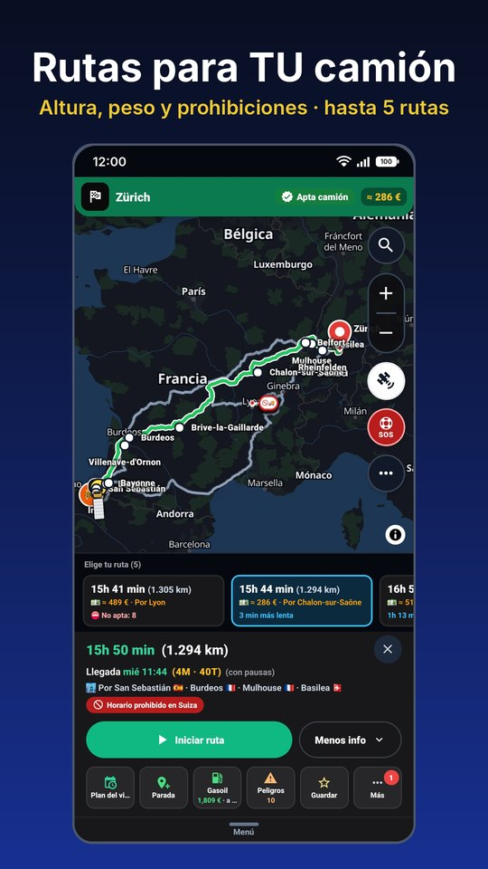
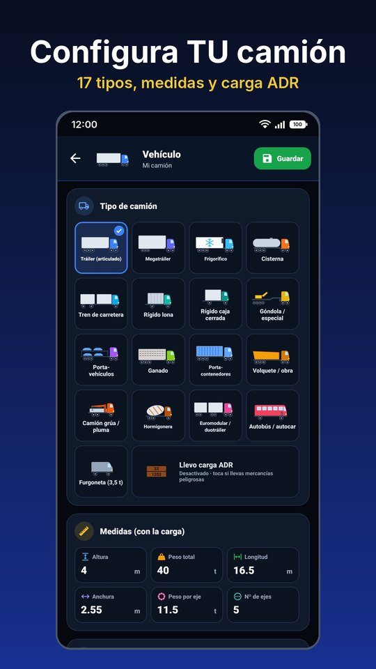
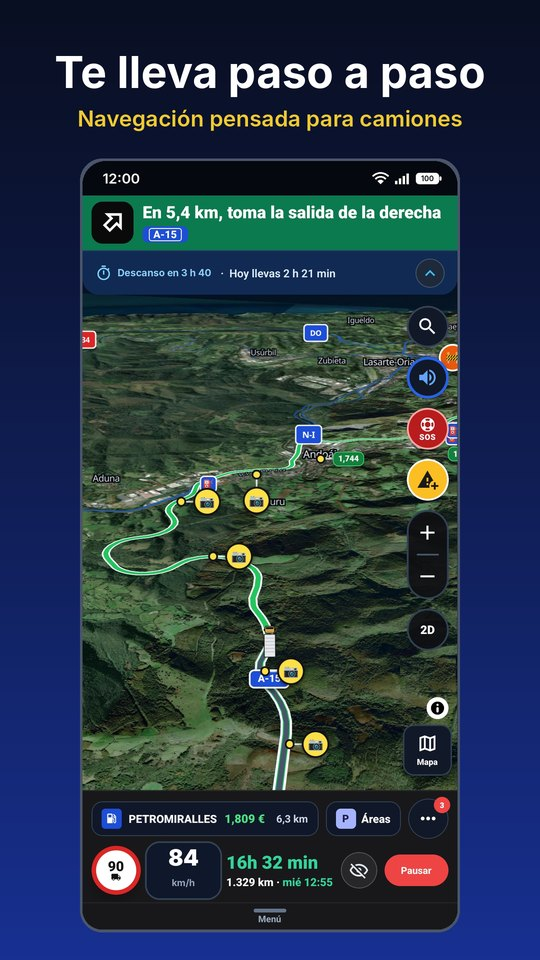
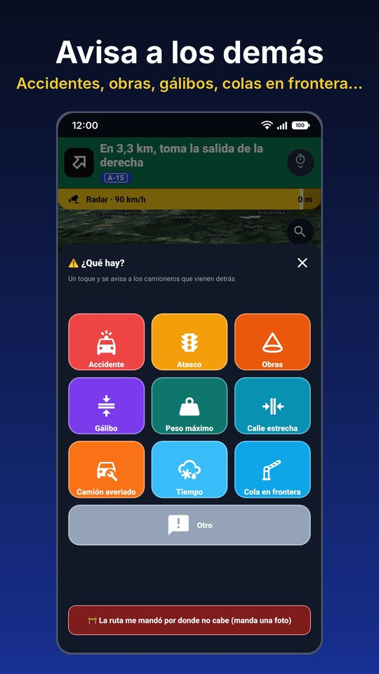
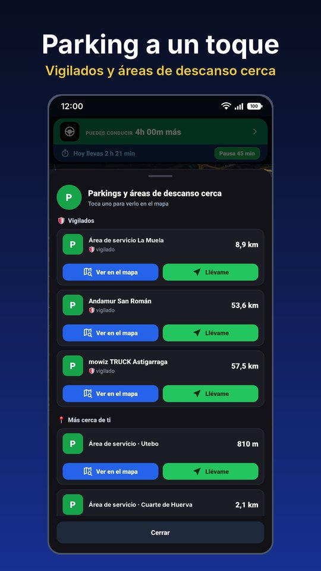
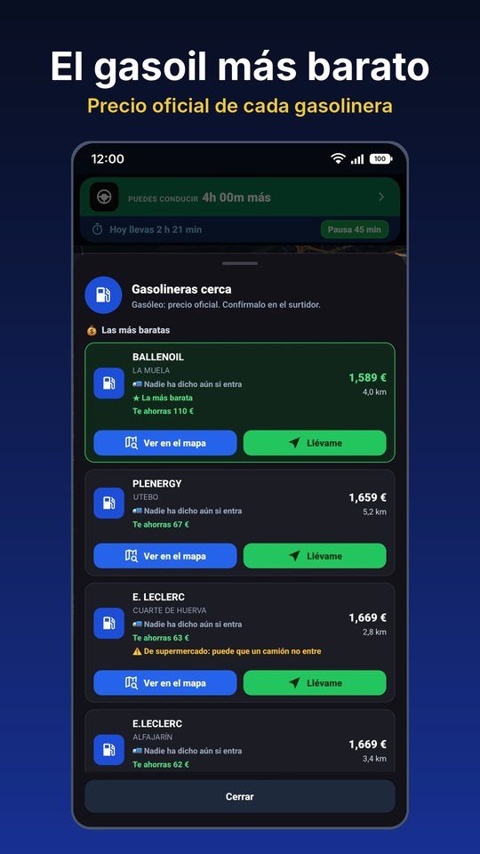
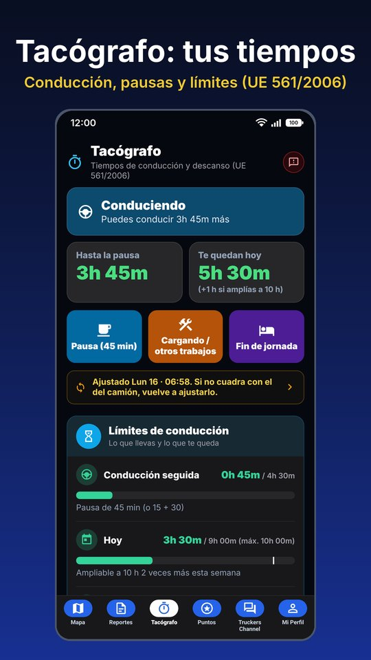
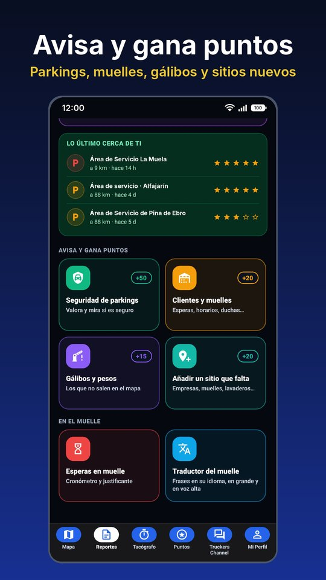

TruckerPass GPSRutas por altura, peso y ADR, las pausas de tu tacógrafo, el gasóleo más barato de tu ruta y avisos entre camioneros. Hecho con camioneros, para camioneros.

Calcula la ruta con la altura, el peso, el largo y el ADR de tu camión. Te enseña hasta 5 rutas con km, tiempo y peajes, y comprueba cada gálibo.
Te dice cuándo te toca la pausa de 45 minutos y el descanso, y en qué área parar para que te dé tiempo.
Precios de España, Francia, Portugal y Austria con tus tarjetas (DKV, UTA, AS24…). Te dice dónde repostar y cuánto ahorras.
Accidentes, obras, atascos, colas en la frontera y parkings llenos, de camioneros verificados, con la carretera y el sitio.
Puertos, túneles, bajadas largas, radares, zonas de frenado y ZBE de toda la ruta, en una lista.
Guía por voz también con la pantalla apagada. Le hablas sin tocar el móvil: «llévame a Zaragoza», «hay un atasco».
Y además: mapas sin conexión, cronómetro de espera en el muelle con justificante en PDF, gastos, tickets y CMR, y canal de voz con los camioneros de tu zona.








Es gratis. Primero te apuntas como probador y luego la instalas desde Google Play. Tarda dos minutos.
Entra con la misma cuenta de Gmail que usas en Play Store y pulsa el botón «Unirse al grupo» de arriba. Si te sale «No tienes permiso», no pasa nada: pulsa igualmente «Unirse al grupo».
Abrir el grupoAbre este enlace y pulsa «Convertirse en tester» (en inglés, «Become a tester»). Cuando ponga «Ya eres tester» («You are a tester»), vuelve aquí y pulsa «Descargar en Google Play» para instalarla: así el código de abajo ya va puesto en la app.
Hazte probador Descargar en Google Play 📢 Canal de WhatsAppSi Google Play dice que la app no está disponible o no te deja descargarla, es normal al principio: Google tarda un rato en darte permiso (a veces hasta unas horas). Espera y vuelve a abrir el enlace del paso 2; no hace falta repetir el paso 1.
✅ Si instalas la app con el botón «Descargar en Google Play» de aquí arriba, este código ya va puesto en la app; si no, ponlo tú al registrarte.
🎁 Te ha invitado un compañero. Si instalas la app con el botón «Descargar en Google Play» de aquí arriba, su código ya va puesto; si no, ponlo tú al registrarte. Los dos ganáis puntos.
Al registrarte en la app, en «Código de invitación o de la beta», pon este código. En cuanto te verifiquemos como camionero te regalamos 500 puntos, además de los 1.250 de bienvenida:WEBLos puntos se podrán canjear en gasolineras, cafés y áreas partner cuando lleguen.La estamos probando en ruta con camioneros de verdad. Lo que más nos ayuda que nos cuentes desde la propia app:
Nada. Es gratis.
Todavía no. Por ahora solo para Android.
Sí. Calcula rutas por toda Europa y la app está en más de 30 idiomas.
Ahorra batería cuando el camión está parado. En viajes largos, llévala enchufada como cualquier GPS.
Tu ubicación se usa para guiarte y no guardamos tu recorrido en nuestros servidores. Lo tienes todo en la política de privacidad.